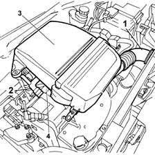
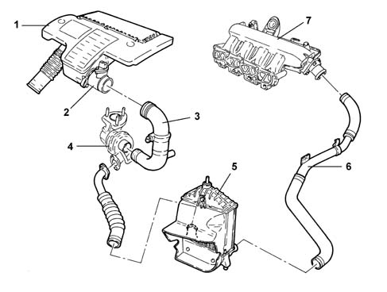

Introduction - ENGINE AIR SUPPLY CIRCUIT
- Path
- Descriptions > 10 ENGINE > 1048 ENGINE AIR SUPPLY CIRCUIT > Introduction - ENGINE AIR SUPPLY CIRCUIT
- Kind
- system description
- Applies to
- all engines; all production periods
- Interactive page
- https://sloeber94.github.io/elrnDB-fPnd/en/#/2753458
Applies to: engines: 1.1, 1.2 8v; all production periods
The air intake circuit consists of various components which ensure that the air flow required by the engine in the various operating conditions is correctly directed.

1, Intake vent 2, Oil vapour recovery hose 3, Air filter casing 4, Inlet manifold
Applies to: engines: 1.3 JTD 16v; all production periods
STRUCTURE
AIR SUPPLY SYSTEM

1 - Air filter complete with resonator 2 - Flow meter 3 - Connection sleeve to turbocharger 4 - Turbocharger 5 - Air-air heat exchanger (intercooler) 6 - Connecting sleeve between intercooler - air inlet manifold 7 - Air inlet manifold